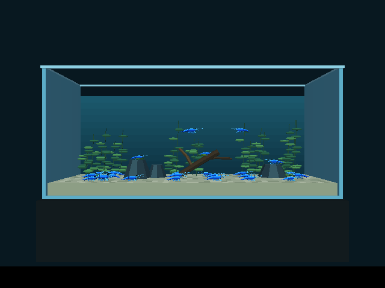
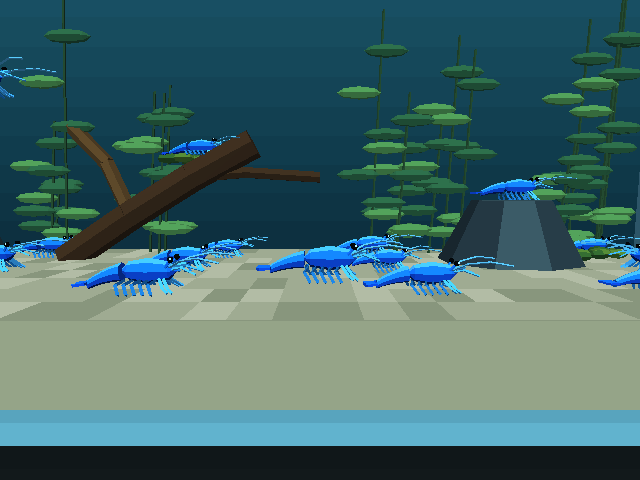

The independent second Aquarium level: 24 animated shrimp, plants, wood, moss and rocks. These images and the clip come from the running World Foundry engine.
Grazing colony, player movement and a backward tail flick. Fixed simulation steps encoded at 20 fps.


{
"actor_count": 159,
"shrimp_count": 24,
"residents_moving_over_2s": [
1,
2,
3,
4,
7,
8,
9,
10,
13,
14,
18,
19,
22,
23
],
"close_up_player_position": [
2.0,
-0.4,
0.965
],
"right_move_m": 1.028607,
"wall_right": [
5.08,
0.0,
2.11803
],
"wall_left": [
-5.08,
0.0,
2.104035
],
"wall_up": [
0.559988,
0.0,
4.326
],
"wall_down": [
0.5,
0.0,
0.965
],
"wall_away": [
0.5,
0.728825,
2.175523
],
"wall_toward": [
0.5,
-0.728959,
2.104035
],
"dart_velocity_x": -1.708709,
"status": "PASS",
"desktop_debug_ms_per_frame_estimate": 79.71875587973045,
"cost_note": "Two frame counts with vsync disabled; desktop debug build, not a device benchmark."
}